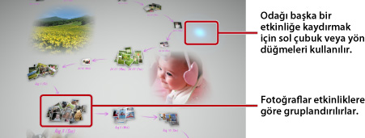

Fotoğrafları görüntüleme
Photo Gallery'yi başlattığınızda, PS3™ sisteminin sistem depolama alanına kaydedilen tüm fotoğraflar otomatik olarak analiz edilir ve etkinliklere göre gruplanır. Fotoğraflar, etkinliklere göre gruplanırken fotoğrafların tarih ve saatine bakılır.
Etkinlikleri seçme
Sol çubuğu veya yön düğmelerini kullanarak fotoğraftan fotoğrafa veya etkinlikten etkinliğe gidin. Birden fazla fotoğrafı veya etkinliği her seçimde  düğmesine basarak seçebilirsiniz.
düğmesine basarak seçebilirsiniz.

Fotoğrafların görüntülenme şeklini değiştirme
Fotoğrafların görüntülenme şeklini değiştirmek için, grupları veya etkinlikleri seçin ve sonra  düğmesine basın. Ekran, izleyen görüntülerde gösterilen şekilde değişir. Önceki ekrana geri gitmek için,
düğmesine basın. Ekran, izleyen görüntülerde gösterilen şekilde değişir. Önceki ekrana geri gitmek için,  düğmesine basın.
düğmesine basın.
İpucu
Fotoğraf tam ekran modunda görüntülendiğinde,  düğmesine basarak XMB™ ekranında
düğmesine basarak XMB™ ekranında  (Fotoğraf) kategorisi altında kullanılan kontrol paneline erişebilirsiniz. Sonra, görüntülenen fotoğrafta mevcut kontrol paneli seçeneklerini kullanabilirsiniz.
(Fotoğraf) kategorisi altında kullanılan kontrol paneline erişebilirsiniz. Sonra, görüntülenen fotoğrafta mevcut kontrol paneli seçeneklerini kullanabilirsiniz.
Fotoğrafları slayt gösterisi olarak görüntüleme
Fotoğraflarınızın bir slayt gösterisini oynatmak için, [Kütüphane Alanı] içinden bir oynatma listesi veya bir etkinlik seçin, düğmesine basın ve sonra  (Slayt Gösterisi) öğesini seçin. Görüntülenen ekrandan, aşağıda açıklanan slayt gösterisi seçeneklerini ayarlayın ve sonra [Başlat] öğesini seçin.
(Slayt Gösterisi) öğesini seçin. Görüntülenen ekrandan, aşağıda açıklanan slayt gösterisi seçeneklerini ayarlayın ve sonra [Başlat] öğesini seçin.
| Slayt Gösterisi Stili | Fotoğrafların slayt gösterisinde nasıl görüntülenmesini istediğinizi seçin. |
|---|---|
| Slayt Gösterisi Hızı | Slayt gösterisi hızını ayarlayın. |
| Sırala | Fotoğrafların sırasını seçin. |
| Slayt Gösterisi Müziği | Photo Gallery uygulamasıyla sağlanan müzik içeriğinden slayt gösterisi sırasında arkaplanda çalınacak müziği seçin. |
 |
XMB™ ekranındaki  (Müzik) kategorisinden slayt gösterisi sırasında arkaplanda çalınacak müziği seçin. (Müzik) kategorisinden slayt gösterisi sırasında arkaplanda çalınacak müziği seçin. |
İpuçları
- Bir slayt gösterisi sırasında, düğmesine basarak (Fotoğraf) kategorisi için kontrol paneline erişebilirsiniz. Sonra, slayt gösterisinde mevcut kontrol paneli seçeneklerini kullanabilirsiniz.
- Fotoğraflar [Kütüphane Alanı] içinde görüntülendiğinde, fotoğrafları görüntülerdeki benzerliklere göre sıralamak için [Sırala] altında [Yakınlık] öğesini seçebilirsiniz.
Arkaplan müziğini değiştirme
Fotoğrafları görüntülerken arkaplanda çalan müziği değiştirebilirsiniz. XMB™ ekranını görüntülemek için kablosuz kontrol cihazında PS düğmesine basın, (Müzik) öğesine gidin ve sonra çalmak istediğiniz müzik dosyasını seçin.
İpuçları
- Bir slayt gösterisinin arkaplan müziğini değiştirmek için, slayt gösterisini değiştirmeye başlamadan önce çalmak istediğiniz müziği seçin.
- Photo Gallery'yi kullanırken bir depolama ortamında arkaplan müziği olarak kaydedilmiş bir müzik parçasını seçerseniz ve sonra bir slayt gösterisini başlatırsanız, slayt gösterisi bittikten sonra parça tekrar çalmaz.